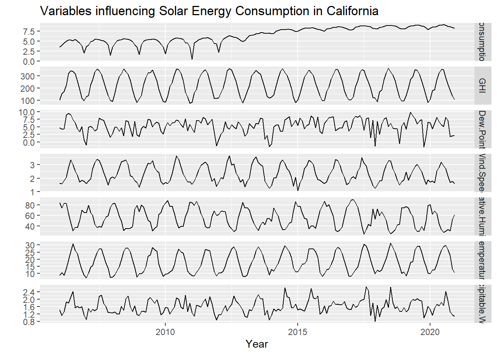
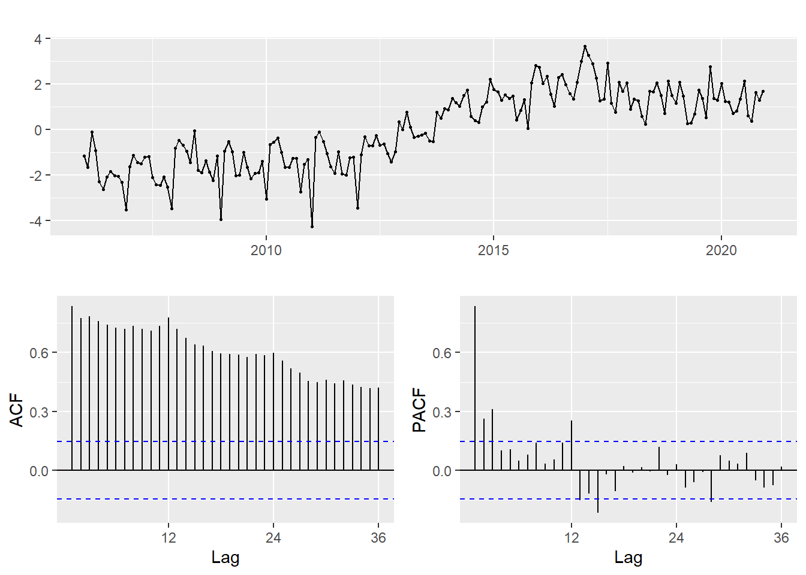
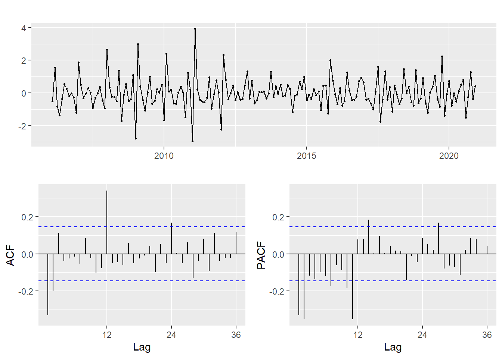
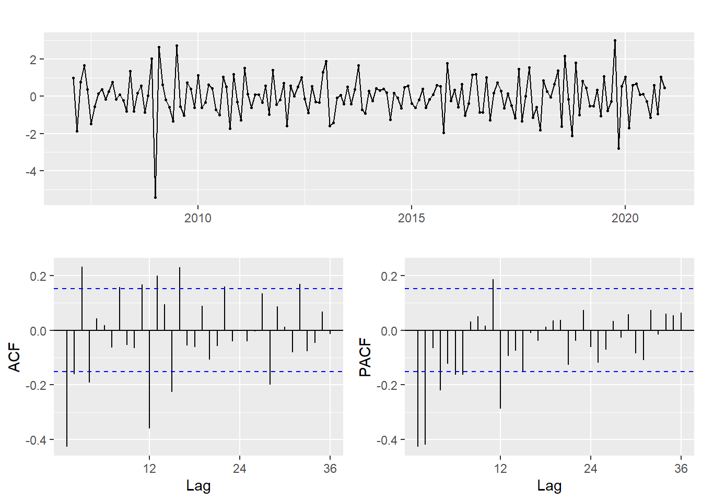
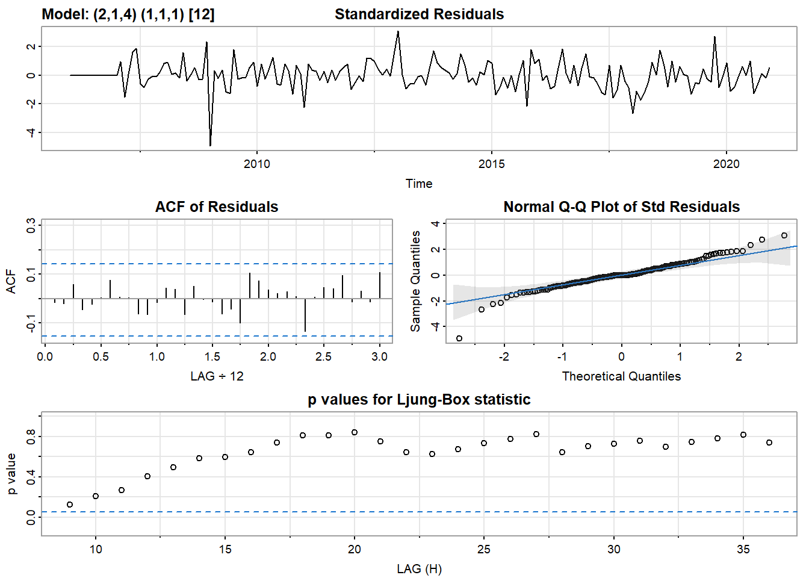
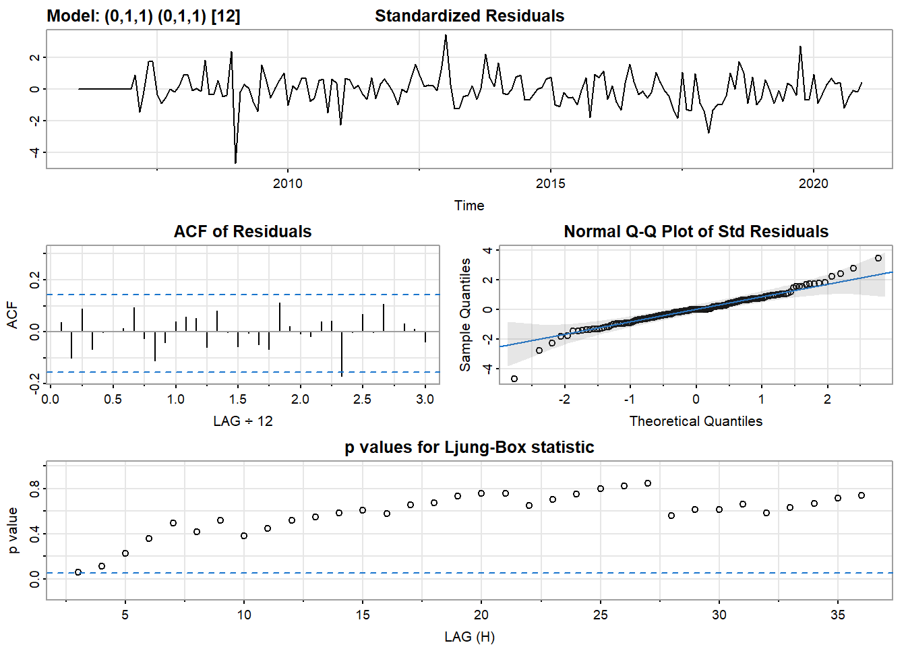
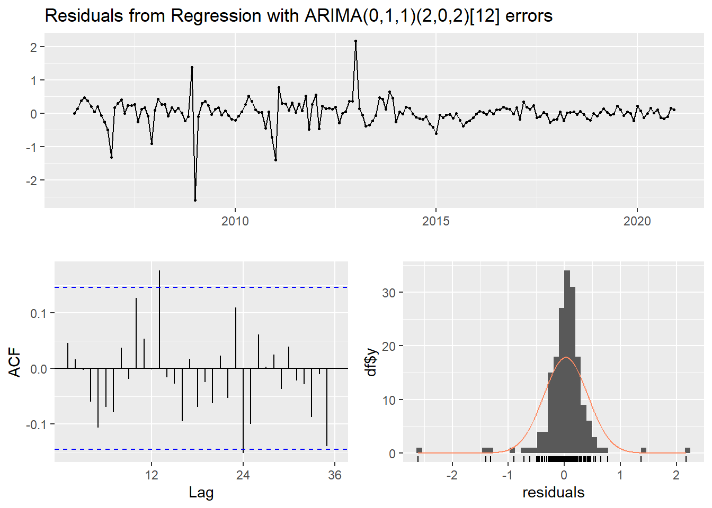
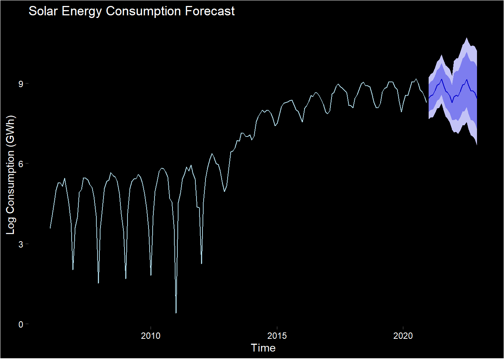

SARIMAX Models
In this section our focus is on fitting SARIMAX models to our data. These models are used to identify relationships between the time series and other variables by adding additional regressors to the SARIMA equation. One of our main questions of interest was how does weather (e.g., temperature, precipitation, cloud cover) in California affect solar power generation over time? We can use SARIMAX models to examine this relationship.
All code for this tab can be found here.

Fitting the Model Manually
Call:
lm(formula = consumption ~ GHI + Dew.Point + Wind.Speed + Relative.Humidity +
Temperature + Precipitable.Water, data = df)
Residuals:
Min 1Q Median 3Q Max
-4.439 -1.208 0.073 1.323 3.791
Coefficients:
Estimate Std. Error t value Pr(>|t|)
(Intercept) 2.223e+01 3.693e+00 6.019 1.02e-08 ***
GHI 3.258e-05 5.300e-03 0.006 0.99510
Dew.Point 7.924e-01 1.609e-01 4.924 1.97e-06 ***
Wind.Speed -4.673e-01 6.056e-01 -0.772 0.44132
Relative.Humidity -1.875e-01 4.244e-02 -4.419 1.75e-05 ***
Temperature -3.820e-01 1.304e-01 -2.930 0.00385 **
Precipitable.Water -8.302e-01 8.934e-01 -0.929 0.35408
---
Signif. codes: 0 '***' 0.001 '**' 0.01 '*' 0.05 '.' 0.1 ' ' 1
Residual standard error: 1.672 on 173 degrees of freedom
Multiple R-squared: 0.2742, Adjusted R-squared: 0.249
F-statistic: 10.89 on 6 and 173 DF, p-value: 2.832e-10We see that the variables GHI, Wind Speed, and Precipitable Water are not significant indicating that solar radiation, wind, and rain are not important predictors of solar energy consumption while Dew Point, Humidity, and Temperature are. We will now fit the model again using these variables.
Call:
lm(formula = consumption ~ Dew.Point + Relative.Humidity + Temperature,
data = df)
Residuals:
Min 1Q Median 3Q Max
-4.2710 -1.2788 0.0242 1.3516 3.6591
Coefficients:
Estimate Std. Error t value Pr(>|t|)
(Intercept) 22.9574 3.6024 6.373 1.57e-09 ***
Dew.Point 0.7668 0.1382 5.549 1.04e-07 ***
Relative.Humidity -0.2068 0.0400 -5.170 6.30e-07 ***
Temperature -0.4891 0.1127 -4.341 2.39e-05 ***
---
Signif. codes: 0 '***' 0.001 '**' 0.01 '*' 0.05 '.' 0.1 ' ' 1
Residual standard error: 1.672 on 176 degrees of freedom
Multiple R-squared: 0.2624, Adjusted R-squared: 0.2498
F-statistic: 20.87 on 3 and 176 DF, p-value: 1.291e-11
We see extreme autocorrelation here amongst the residuals, so now we will difference them.

There is still autocorrelation so now we will apply seasonal differencing.

This looks better and is now ready for testing various SARIMA models. Based on the plots we should try p of 1-3, P of 1, q of 1-4, and Q of 1.
| p | d | q | P | D | Q | AIC | BIC | AICc | |
|---|---|---|---|---|---|---|---|---|---|
| 60 | 2 | 1 | 4 | 1 | 1 | 1 | 393.9246 | 421.9865 | 395.0711 |
| 6 | 0 | 1 | 1 | 0 | 1 | 1 | 396.1907 | 405.5446 | 396.3379 |
| 601 | 2 | 1 | 4 | 1 | 1 | 1 | 393.9246 | 421.9865 | 395.0711 |
Looking at Model Diagnostics


Both model diagnostic plots look great so we should continue with SARIMA(0,1,1)(0,1,1)[12] due to the principle of parsimony as it is a much simpler model.
Fitting the Model Using auto.arima()
Series: df.ts[, "consumption"]
Regression with ARIMA(0,1,1)(2,0,2)[12] errors
Coefficients:
ma1 sar1 sar2 sma1 sma2 Dew.Point Relative.Humidity
-0.7572 0.7015 0.0405 0.1520 0.2887 0.0257 -0.0147
s.e. 0.0626 0.2189 0.2000 0.2129 0.1147 0.0356 0.0106
Temperature
-0.0197
s.e. 0.0365
sigma^2 = 0.1617: log likelihood = -95.85
AIC=209.7 AICc=210.76 BIC=238.38
Training set error measures:
ME RMSE MAE MPE MAPE MASE
Training set 0.02252101 0.3919819 0.2288218 -2.262883 6.992691 0.5976852
ACF1
Training set 0.0456568
Ljung-Box test
data: Residuals from Regression with ARIMA(0,1,1)(2,0,2)[12] errors
Q* = 27.498, df = 19, p-value = 0.09357
Model df: 5. Total lags used: 24auto.arima() fit a SARIMA(0,1,1)(2,0,2)[12] model. The residuals plot indicates that there is autocorrelation amongst the lags as the Ljung-Box test returned a p-value of .094. However, this number is close to the rejection criteria and the residuals plots do look solid.
Choosing the Best model with CV
Fit1 was the simple model chosen from manual selection and fit3 was the choice from auto.arima(). I also checked the other model from manual selection as fit2 to be thorough. Based on the results, we see that fit2 suffers from high variance and high bias, further indicating that this is not the best model. We see that fit3 is the best.
Series: df.ts[, "consumption"]
Regression with ARIMA(0,1,1)(2,0,2)[12] errors
Coefficients:
ma1 sar1 sar2 sma1 sma2 Dew.Point Relative.Humidity
-0.7572 0.7015 0.0405 0.1520 0.2887 0.0257 -0.0147
s.e. 0.0626 0.2189 0.2000 0.2129 0.1147 0.0356 0.0106
Temperature
-0.0197
s.e. 0.0365
sigma^2 = 0.1617: log likelihood = -95.85
AIC=209.7 AICc=210.76 BIC=238.38
Training set error measures:
ME RMSE MAE MPE MAPE MASE
Training set 0.02252101 0.3919819 0.2288218 -2.262883 6.992691 0.5976852
ACF1
Training set 0.0456568Forecasting
Series: df$Dew.Point
ARIMA(1,0,0)(1,0,0)[12] with non-zero mean
Coefficients:
ar1 sar1 mean
0.3275 0.1966 5.3102
s.e. 0.0743 0.0781 0.2870
sigma^2 = 4.568: log likelihood = -390.91
AIC=789.82 AICc=790.05 BIC=802.59
Training set error measures:
ME RMSE MAE MPE MAPE MASE
Training set -0.004585208 2.119434 1.673436 7.775676 62.35839 0.7885715
ACF1
Training set -0.007595889Series: df$Relative.Humidity
ARIMA(1,0,1)(1,1,1)[12]
Coefficients:
ar1 ma1 sar1 sma1
0.7880 -0.4072 -0.0523 -0.8694
s.e. 0.0958 0.1397 0.0982 0.0992
sigma^2 = 57.18: log likelihood = -585.29
AIC=1180.57 AICc=1180.94 BIC=1196.19
Training set error measures:
ME RMSE MAE MPE MAPE MASE
Training set -0.7549294 7.217696 5.529367 -3.141838 10.76834 0.6587356
ACF1
Training set -0.01212801Series: df$Temperature
ARIMA(1,0,0)(2,1,1)[12]
Coefficients:
ar1 sar1 sar2 sma1
0.3755 0.0884 -0.1265 -0.7675
s.e. 0.0786 0.1170 0.1033 0.1014
sigma^2 = 2.101: log likelihood = -304.44
AIC=618.89 AICc=619.26 BIC=634.51
Training set error measures:
ME RMSE MAE MPE MAPE MASE
Training set 0.2453951 1.383605 1.030662 0.9026313 6.698278 0.7491152
ACF1
Training set -0.06335115Warning in forecast.forecast_ARIMA(fit, xreg = fxreg): xreg contains different
column names from the xreg used in training. Please check that the regressors
are in the same order.
Comparing to benchmarks
| Benchmark | ME | RMSE | MAE | MPE | MAPE |
|---|---|---|---|---|---|
| Fitted SARIMAX | 0.16 | 0.25 | 0.2 | 1.73 | 2.26 |
| Fitted SARIMA | 0.04 | 0.14 | 0.11 | 0.48 | 1.31 |
| Fitted ARIMA | 0.05 | 0.13 | 0.1 | 0.53 | 1.19 |
| Mean | 2.41 | 2.43 | 2.41 | 27.49 | 27.49 |
| Naive | -0.09 | 0.34 | 0.27 | -1.19 | 3.18 |
| Drift | -0.44 | 0.6 | 0.48 | -5.18 | 5.65 |
| sNaive | 0.06 | 0.15 | 0.12 | 0.73 | 1.39 |
What we see from these results is that the SARIMAX model is not the best for predicting solar energy consumption. Using the variables of dew point, temperature and humidity did not add to the predictability of consumption indicating that they are not useful in addition to the time series information itself, rather they add noise that reduces accuracy. This would indicate that these variables are not what causes changes in solar energy consumption which is arguably a positive sign. Solar energy consumption is directly tied to generation, so the fact that these weather related variables do not cause a significant impact means that weather is not a major factor - which is great if you want a consistent supply of energy to consume. Rather it appears that things like technological improvement, macroeconomic factors, and government policies are the driving force behind solar energy consumption changes.